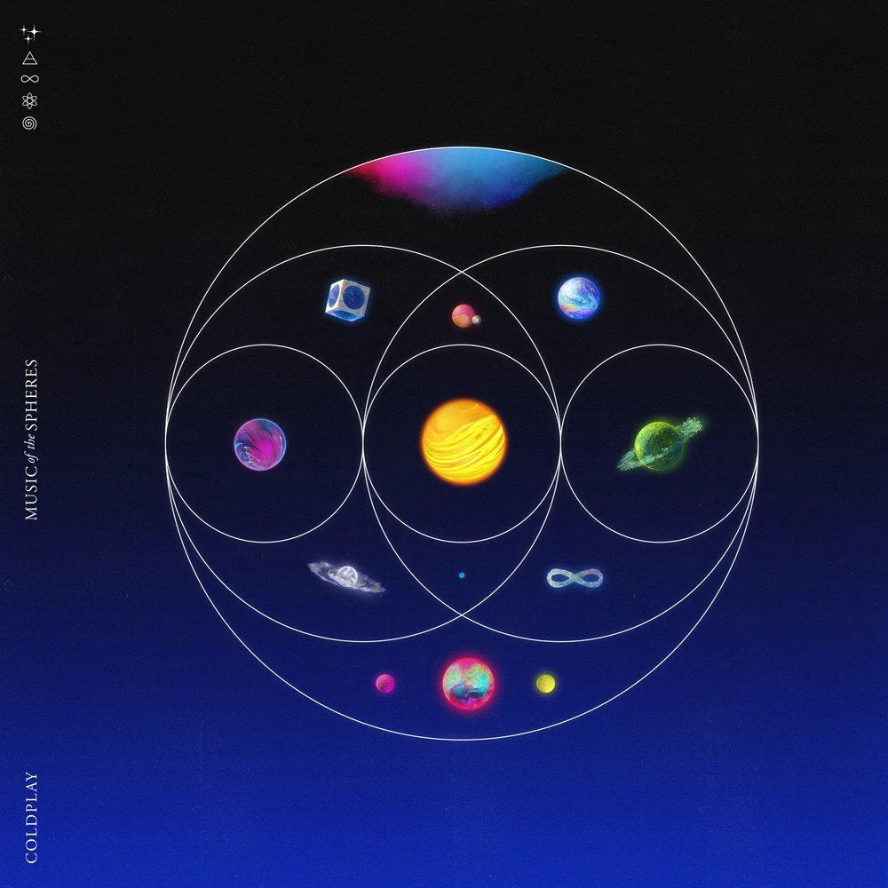
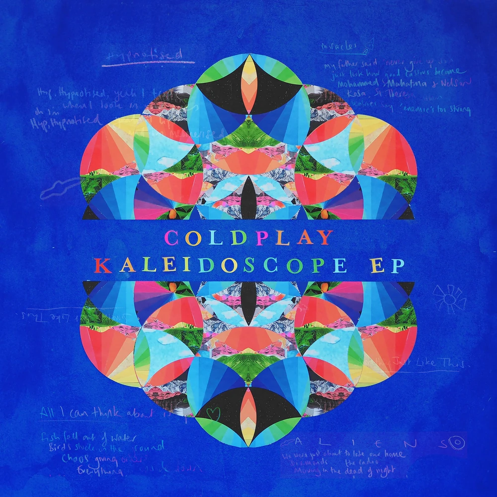
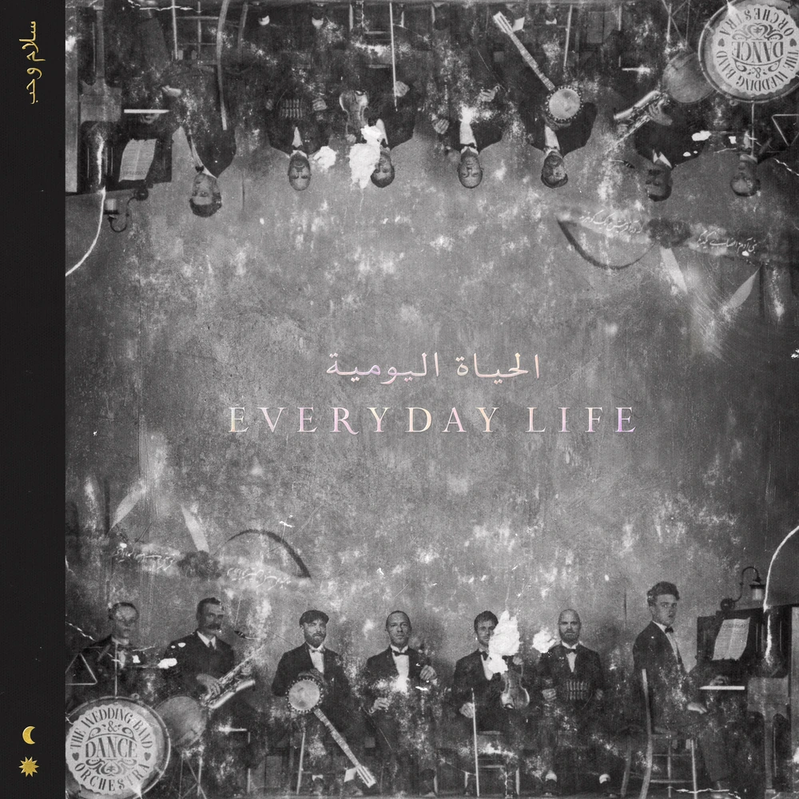
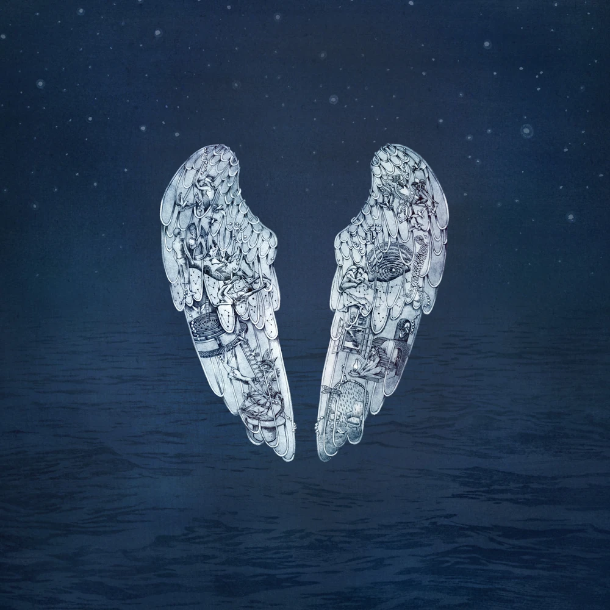
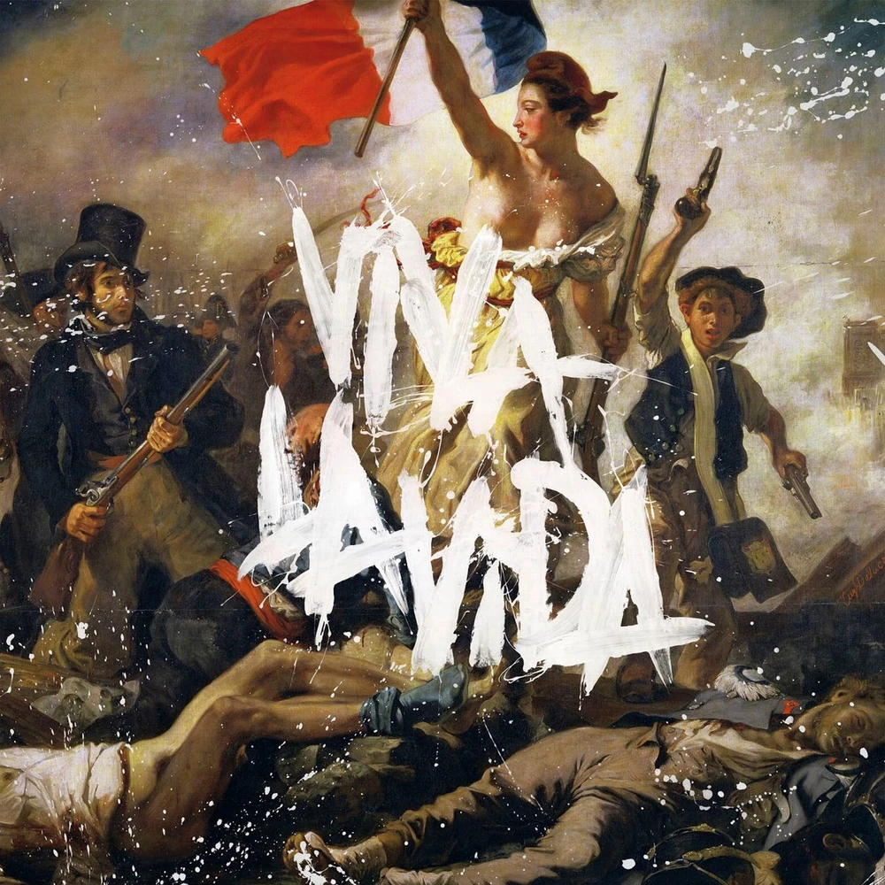

Coldplay
.jpg)
About Coldplay
Coldplay (as shown from left to right (except for Phil)) is a band comprised of Jonny Buckland (guitar), Chirs Martin (vocals & piano), Guy Berryman (bass), William Champion, and Phil Harvey (who is the creative director and doesn't play an instrument)
15. Music of the Spheres ★★★★★

Music of the Spheres (2021) (Full title being: Music of the Spheres Volume 1: From Earth With Love) is Coldplay's 9th LP.
- Music of the Spheres ★★★★★
- Higher Power ★★★★★
- Humankind ★★★★★
- Alien Choir ★★★★★
- Let Somebody Go ★★★★★
- Human Heart ★★★★★
- People of the Pride ★★★★★
- Biutyful ★★★★★
- Music of the Spheres II ★★★★★
- My Universe ★★★★★
- Infinity Sign ★★★★★
- Coloratura ★★★★★
14. Kaleidoscope ★★★★★

The Kalideoscope EP (2017) is Coldplay's 12th EP.
- All I Can Think About Is You ★★★★★
- Miracles (Someone Special) ★★★★★
- A L I E N S ★★★★★
- Something Just Like This (Tokyo Remix) ★★★★★
- Hypnotised ★★★★★
13. A Head Full of Dreams ★★★★★

A Head Full of Dreams (2015) is Coldplay's 7th LP.
- A Head Full of Dreams ★★★★★
- Birds ★★★★★
- Hymn For the Weekend ★★★★★
- Everglow ★★★★★
- Adventure of a Lifetime ★★★★★
- Fun ★★★★★
- Kaleidoscope ★★★★★
- Army Of One ★★★★★
- X Marks the Spot ★★★★★
- Amazing Day ★★★★★
- Color Spectrum ★★★★★
- Up&Up ★★★★★
12. Moon Music ★★★★★

Moon Music (2024) (Full title being: Music of the Spheres Volume 2: Moon Music) is Coldplay's 10th LP.
- MOON MUSiC ★★★★★
- feelslikeimfallinginlove ★★★★★
- WE PRAY ★★★★★
- JUPITER ★★★★★
- GOOD FEELINGS ★★★★★
- ALiEN HiTS/ALiEN RADiO ★★★★★
- iAAM ★★★★★
- AETERNA ★★★★★
- ALL MY LOVE ★★★★★
- ONE WORLD ★★★★★
- The Karate Kid ★★★★★
- Man in the Moon ★★★★★
- A Wave ★★★★★
11. Safety ★★★★★

The Safety EP (1998) is Coldplay's 1st EP.
- Bigger Stronger ★★★★★
- No More Keeping My Feet Off the Ground ★★★★★
- Such A Rush ★★★★★
10. Brothers & Sisters ★★★★★

Brothers and Sisters (1999) is Coldplay's 2nd EP.
- Brothers and Sisters ★★★★★
- Easy To Please ★★★★★
- Only Superstition ★★★★★
9. The Blue Room ★★★★★

The Blue Room (1999) is Coldplay's 3rd EP.
- Bigger Stronger ★★★★★
- Don't Panic ★★★★★
- See You Soon ★★★★★
- High Speed ★★★★★
- Such A Rush ★★★★★
8. Mylo Xyloto ★★★★★

Mylo Xyloto (2011) is Coldplay's 5th LP.
- Mylo Xyloto ★★★★★
- Hurts Like Heaven ★★★★★
- Paradise ★★★★★
- Charlie Brown ★★★★★
- Us Against the World ★★★★★
- M.M.I.X ★★★★★
- Every Teardrop is A Waterfall ★★★★★
- Major Minus ★★★★★
- U.F.O. ★★★★★
- Princess of China ★★★★★
- Up in Flames ★★★★★
- A Hopeful Transmission ★★★★★
- Don't Let it Break Your Heart ★★★★★
- Up With the Birds ★★★★★
7. Prospekts March ★★★★★

Prospekt's March (2008) is Coldplay's 8th EP.
- Life in Technicolor ii ★★★★★
- Postcards From Far Away ★★★★★
- Glass of Water ★★★★★
- Rainy Day ★★★★★
- Prospekts March/Poppyfields ★★★★★
- Lost+ ★★★★★
- Lovers in Japan (Osaka Sun Mix) ★★★★★
- Now My Feet Won't Touch The Ground ★★★★★
6. Everyday Life ★★★★★

Everyday Life (2019) is Coldplay's 8th LP.
- Sunrise ★★★★★
- Church ★★★★★
- Trouble in Town ★★★★★
- BrokEn ★★★★★
- Daddy ★★★★★
- WOTW/POTP ★★★★★
- Arabesque ★★★★★
- When I Need a Friend ★★★★★
- Guns ★★★★★
- Orphans ★★★★★
- Èkó ★★★★★
- Cry Cry Cry ★★★★★
- Old Friends ★★★★★
- بنی آدم ★★★★★
- Champion of the World ★★★★★
- Everyday Life ★★★★★
- Flags ★★★★★
5. A Rush Of Blood to the Head ★★★★★

A Rush of Blood to the Head (2002) is Coldplay's 2nd LP.
- Politik ★★★★★
- In My Place ★★★★★
- God Put a Smile Upon Your Face ★★★★★
- The Scientist ★★★★★
- Clocks ★★★★★
- Daylight ★★★★★
- Green Eyes ★★★★★
- Warning Sign ★★★★★
- A Whisper ★★★★★
- A Rush of Blood to the Head ★★★★★
- Amsterdam ★★★★★
4. Parachtues ★★★★★

Parachutes (2000) is Coldplay's 1st LP.
- Don't Panic ★★★★★
- Shiver ★★★★★
- Spies ★★★★★
- Sparks ★★★★★
- Yellow ★★★★★
- Trouble ★★★★★
- Parachutes ★★★★★
- High Speed ★★★★★
- We Never Change ★★★★★
- Everything's Not Lost ★★★★★
- Life is For Living ★★★★★
3. Ghost Stories ★★★★★

Ghost Stories (2014) is Coldplay's 6th LP.
- Always In My Head ★★★★★
- Magic ★★★★★
- Ink ★★★★★
- True Love ★★★★★
- Midnight ★★★★★
- Another's Arms ★★★★★
- Oceans ★★★★★
- A Sky Full of Stars ★★★★★
- O ★★★★★
- All Your Friends ★★★★★
- Ghost Story ★★★★★
- O (reprise) ★★★★★
2. X&Y ★★★★★

X&Y (2005) is Coldplay's 3rd LP.
- Square One ★★★★★
- What If ★★★★★
- White Shadows ★★★★★
- Fix You ★★★★★
- Talk ★★★★★
- X&Y ★★★★★
- Speed of Sound ★★★★★
- A Message ★★★★★
- Low ★★★★★
- The Hardest Part ★★★★★
- Swallowed in the Sea ★★★★★
- Twisted Logic ★★★★★
- Til Kingdom Come ★★★★★
- How You See the World ★★★★★
1. Viva La Vida or Death and All His Friends ★★★★★

Viva La Vida or Death and All His Friends (2008) is Coldplay's 4th LP.
- Life in Technicolor ★★★★★
- Cemeteries of London ★★★★★
- Lost! ★★★★★
- 42 ★★★★★
- Lovers in Japan ★★★★★
- Reign of Love ★★★★★
- Yes ★★★★★
- Chinese Sleep Chant ★★★★★
- Viva La Vida ★★★★★
- Violet Hill ★★★★★
- Strawberry Swing ★★★★★
- Death and All His Friends/The Escapist ★★★★★